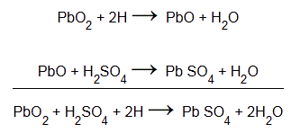

• Materials used
• Lead Peroxide (PbO2)
• Sponge Lead (Pb)
• Dilute Sulfuric Acid (H2SO4)
Working of Lead Acid Battery
The storage battery or secondary battery is such battery where electrical energy can be stored as chemical energy and this chemical energy is then converted to electrical energy as when required. The conversion of electrical energy into chemical energy by applying external electrical source is known as charging of battery . Whereas conversion of chemical energy into electrical energy for supplying the external load is known as discharging of secondary battery .
During charging of battery , electric current is passed through it which causes some chemical changes inside the battery . This chemical changes absorb energy during their formation.
When the battery is connected to the external load, the chemical changes take place in reverse direction, during which the absorbed energy is released as electrical energy and supplied to the load.
Now we will try to understand principle working of lead acid battery and for that we will first discuss about lead acid battery which is very commonly used as storage battery or secondary battery .
Materials used for Lead Acid Storage Battery Cells
The main active materials required to construct a lead-acid battery are
- Lead peroxide (PbO2).
- Sponge lead (Pb) and
- Dilute sulfuric acid (H2SO4).
Lead Peroxide (PbO2)
The positive plate is made of lead peroxide. This is dark brown, hard and brittle substance.
Sponge Lead (Pb)
The negative plate is made of pure lead in soft sponge condition.
Dilute Sulfuric Acid (H2SO4)
Dilute sulfuric acid used for lead acid battery has ration of water : acid = 3:1.
The lead acid storage battery is formed by dipping lead peroxide plate and sponge lead plate in dilute sulfuric acid. A load is connected externally between these plates. In diluted sulfuric acid the molecules of the acid split into positive hydrogen ions ( H+) and negative sulfate ions (SO4 − −). The hydrogen ions when reach at PbO2 plate, they receive electrons from it and become hydrogen atom which again attack PbO2 and form PbO and H2O (water). This PbO reacts with H2 SO4 and forms PbSO4 and H2O (water).

SO4 − − ions are moving freely in the solution so some of them will reach to pure Pb plate where they give their extra electrons and become radical SO4. As the radical SO4 cannot exist alone it will attack Pb and will form PbSO4.
As H+ ions take electrons from PbO2 plate and SO4 − − ions give electrons to Pb plate, there would be an inequality of electrons between these two plates. Hence there would be a flow of electric current through the external load between these plates for balancing this inequality of electrons. This process is called discharging of lead acid battery .
The lead sulfate (PbSO4) is whitish in color. During discharging,
- Both of the plates are covered with PbSO4.
- Specific gravity of sulfuric acid solution falls due to formation of water during reaction at PbO2 plate.
- As a result, the rate of reaction falls which implies the potential difference between the plates decreases during discharging process.
Now we will disconnect the load and connect PbSO4 covered PbO2 plate with positive terminal of an external DC source and PbO2 covered Pb plate with negative terminal of that DC source. During discharging, the density of sulfuric acid falls but there still sulfuric acid exists in the solution. This sulfuric acid also remains as H+ and SO4 − − ions in the solution. Hydrogen ions (cation) being positively charged, move to the electrode (cathode) connected with negative terminal of the DC source. Here each H+ ion takes one electron from that and becomes hydrogen atom. These hydrogen atoms then attack PbSO4 and form lead and sulfuric acid.
SO4 − − ions (anions) move towards the electrode (anode) connected with positive terminal of DC source where they will give up their extra electrons and become radical SO4. This radical SO4 cannot exist alone hence reacts with PbSO4 of anode and forms lead peroxide ( PbO2) and sulfuric acid (H2SO4).
Hence by charging the lead acid storage battery cell,
- Lead sulfate anode gets converted into lead peroxide.
- Lead sulfate of cathode is converted to pure lead.
- Terminal; potential of the cell increases.
- Specific gravity of sulfuric acid increases.
 by
by